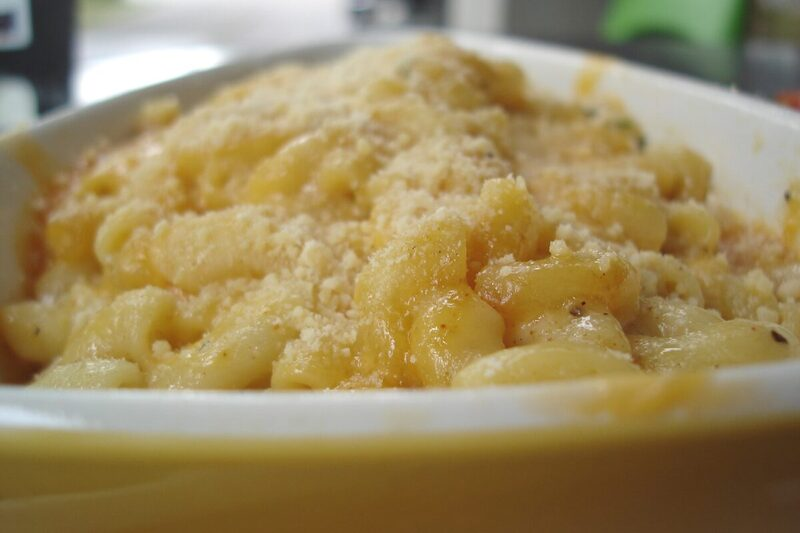

Vegetarian
Baked Mac and Cheese
Elbow pasta in a rich three-cheese sauce, baked until bubbling.
Vegetarian
Nut-Free

A roux-based cheese sauce coats tender pasta, topped with extra cheese and baked until the top turns golden and the edges go crisp.
Ingredients
- 450 g elbow macaroni
- 60 g butter
- 60 g all-purpose flour
- 720 ml milk
- 250 g cheddar, grated
- 100 g gruyere, grated
- 1/2 tsp mustard powder
- salt and pepper to taste
To finish
- 50 g breadcrumbs
- extra cheddar, for topping
Instructions
-
5 min
Adding the milk gradually while whisking is what keeps the sauce smooth instead of lumpy.
- 20 min
- 5 min
Notes
- Swap in any melty cheese combination -- a sharp cheddar plus something meltier like gruyere or gouda balances flavor and texture.
- Keeps 3 days refrigerated; reheat covered with a splash of milk stirred in.
Nutrition Facts
| Nutrient | Amount |
|---|---|
| Calories | 520 kcal |
| Total Fat | 27 g |
| Saturated Fat | 16 g |
| Carbohydrates | 48 g |
| Fiber | 2 g |
| Sugar | 7 g |
| Protein | 22 g |
| Sodium | 560 mg |
| Cholesterol | 75 mg |
| Values are estimates based on standard ingredient data, not laboratory analysis. | |
Photo: Vancouver Bites! from Vancouver, Canada, CC BY-SA 2.0. Cropped to 3:2 and re-encoded as WebP/JPEG for web delivery.
.jpg){kind=link}